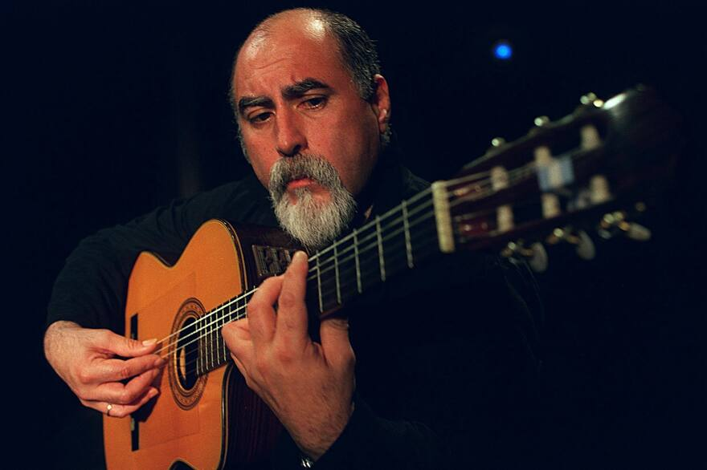

Bienvenidos
Heredero del alma del tango y el folklore argentino, Juanjo Domínguez — nacido un 23 de octubre de 1951 en Junín, provincia de Buenos Aires, y se fue de gira un 10 de febrero de 2019 — deslumbró al mundo con una técnica prodigiosa, destacando su tremolo en tres cuerdas. Su guitarra, como mini orquesta hecha cuerdas, supo acompañar a grandes artístas como Andrés Calamaro, Diego Cigala, María Graña, el Polaco Goyeneche y Horacio Guaraní entre otras figuras, dejando un legado imborrable en la música popular latinoamericana."
“Juanjo puede hacer sin ningún problema lo que nosotros hacemos, pero nosotros no podemos hacer lo que él
hace”.
— Paco de Lucía
Discografía
Juanjo interpreta a los beatles - 2016
- Let It Be3:29
- Michelle2:52
- And I Love Her3:06
- Hey Jude4:35
- Till There Was You (Written-By – Meredith Willson)2:18
- Across The Universe3:29
- All My Loving2:53
- Your Mother Should Know3:23
- I'll Follow The Sun2:14
- I Want To Hold Your Hand2:15
- When I'm Sixty-Four3:08
- Yesterday–
Juanjo Sin red - 2009
- La Nostalgiosa6:43
- Íntimas5:04
- Sin Palabras3:18
- Serie Americana, Gato3:48
- Adiós Nonino8:02
- Caminito Soleado–
- Trombosis–
- La Novia Ausente–
- De Salto y Carta–
- Contramarca–
- La Comparsa4:31
- Recuerdo5:51
- Nieblas Del Riachuelo–
- Como Dos Extraños–
- Quien Tuviera 18 Años3:15
- Absurdo4:10
- Soledad5:15
- Viejo Rincón3:35
Juanjo interpreta a Carlos Gardel - 2004
- Rubias de New York4:56
- Hay Una Virgen2:35
- Silencio2:43
- A Mi Madre3:08
- Amargura2:27
- Medallita de la Suerte2:04
- El día que me Quieras2:55
- Cardo Azul3:16
- Melodía de Arrabal2:08
- Criollita de mis Amores2:18
- Los Ojos de mi Moza3:26
- Caballito del Campo2:06
- El Tirador Plateado2:44
- Para Quererte Nací2:25
- Volver3:41
- Por tu Boca Roja (Impía)2:32